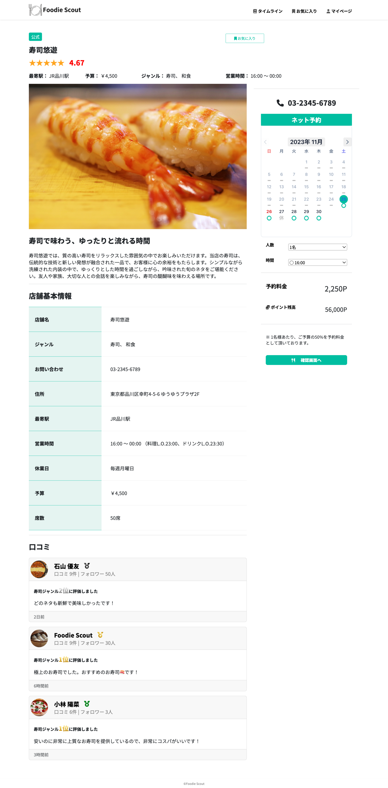
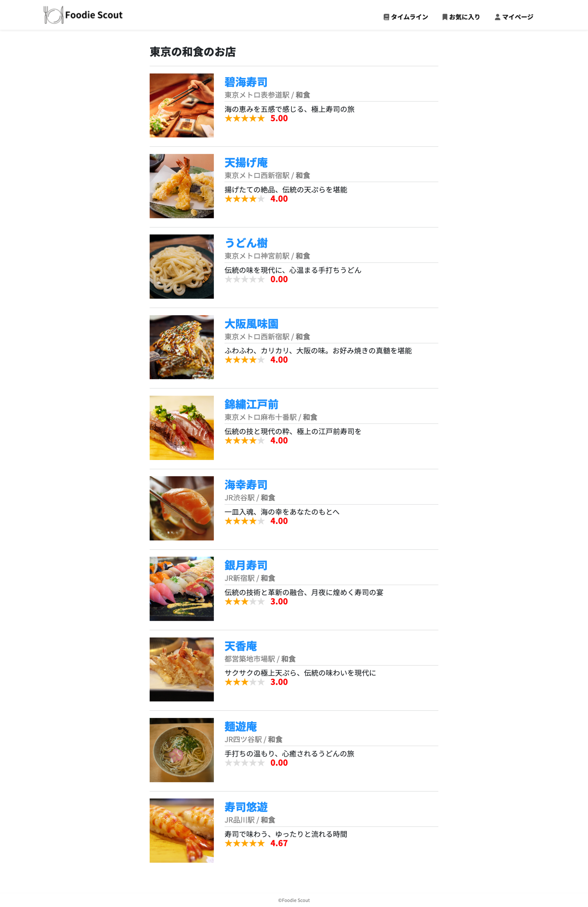
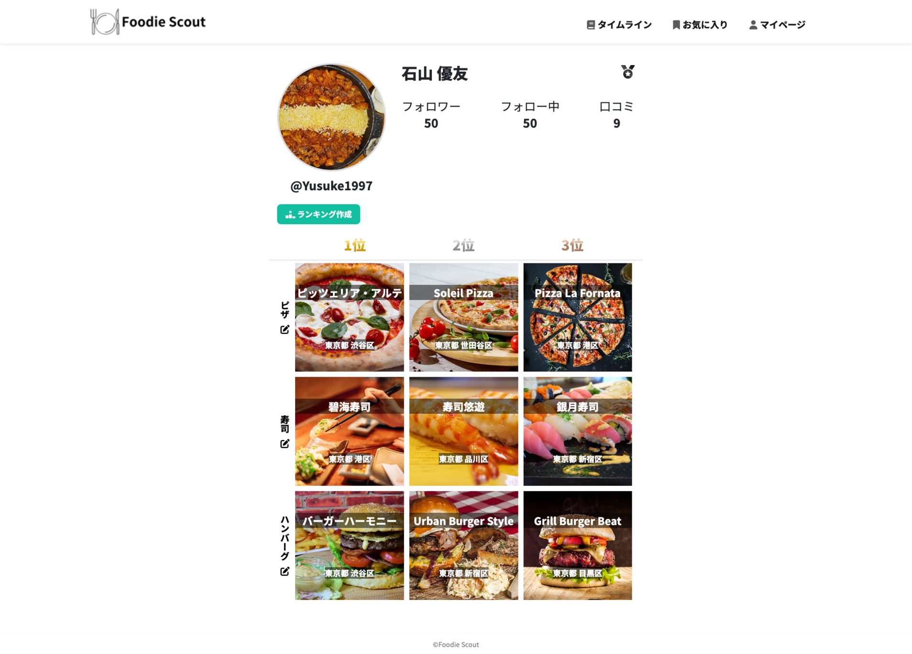
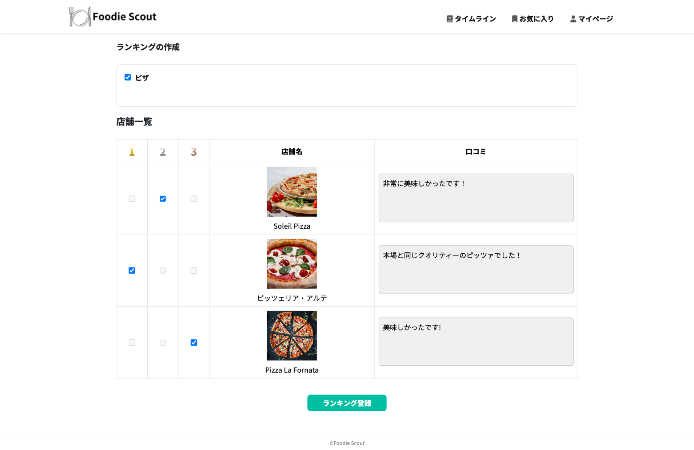

トップ画面

飲食店詳細画面

検索結果画面

プロフィール画面

レビュー作成画面

主にトップ画面と飲食店詳細画面、検索結果画面、プロフィール画面、レビュー作成画面などの 17画面から構成される飲食店予約サービスのWebアプリケーションです。
アプリURL
https://foodie-scout-2c43510ee323.herokuapp.com
テストユーザー
メールアドレス: foodie_scout@example.comパスワード: Foodie_scout
ソースコードURL
https://github.com/yusuke-97/foodie_scout
担当
企画、要件定義、基本設計、詳細設計、開発、テスト
サービスを開発したきっかけ
市場には数多くの飲食店予約サイトが存在しますが、真のグルメを満足させる飲食店の紹介に特化したサービスは不足していると感じました。 このサービスは、グルメ愛好家が個性豊かな美食店を発掘できることを目的に開発しました。
使用技術
HTML / CSS / JavaScript / Vue.js / PHP / Laravel / Docker / Elasticsearch / Amazon S3
重視している点について

このサービスは、グルメ業界における無断キャンセルとフードロスという深刻な問題に対処するため、予約時に予約料金を先払いするシステムを導入しました。 予約料金は店舗が設定した予算の50%で、これによりお客様の予約へのコミットメントを促し、同時にレストランの収益損失を最小限に抑えることが可能です。 このアプローチは、持続可能な飲食文化を促進し、業界全体の責任ある運営に貢献することが期待されます。
例えば、上記の画像では、予算が1人あたり¥4,500なので、予約時には1人あたり2,250P（¥2,250相当）の予約料金が発生します。 また、ポイント残高が不足している場合は、『確認画面へ』というボタンが非活性化される処理を実装しております。
コーディングについて
Webアプリケーションを開発する上で、PCはもちろんのこと、スマートフォンでも見やすくするためレスポンシブ対応を施しております。